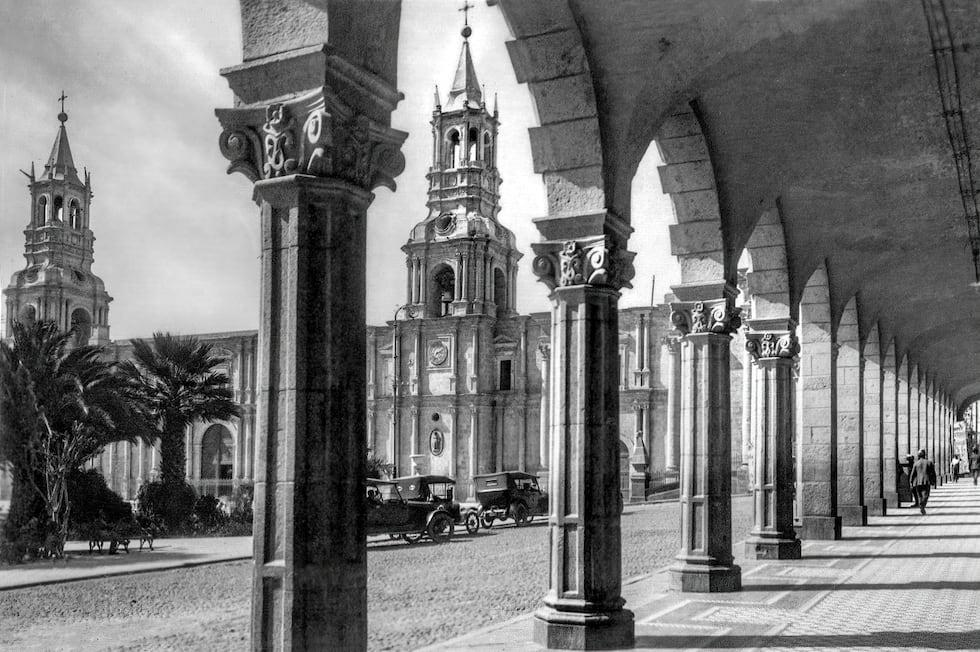
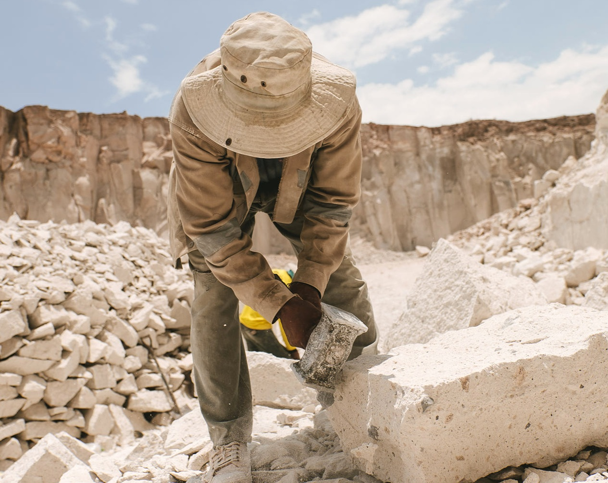
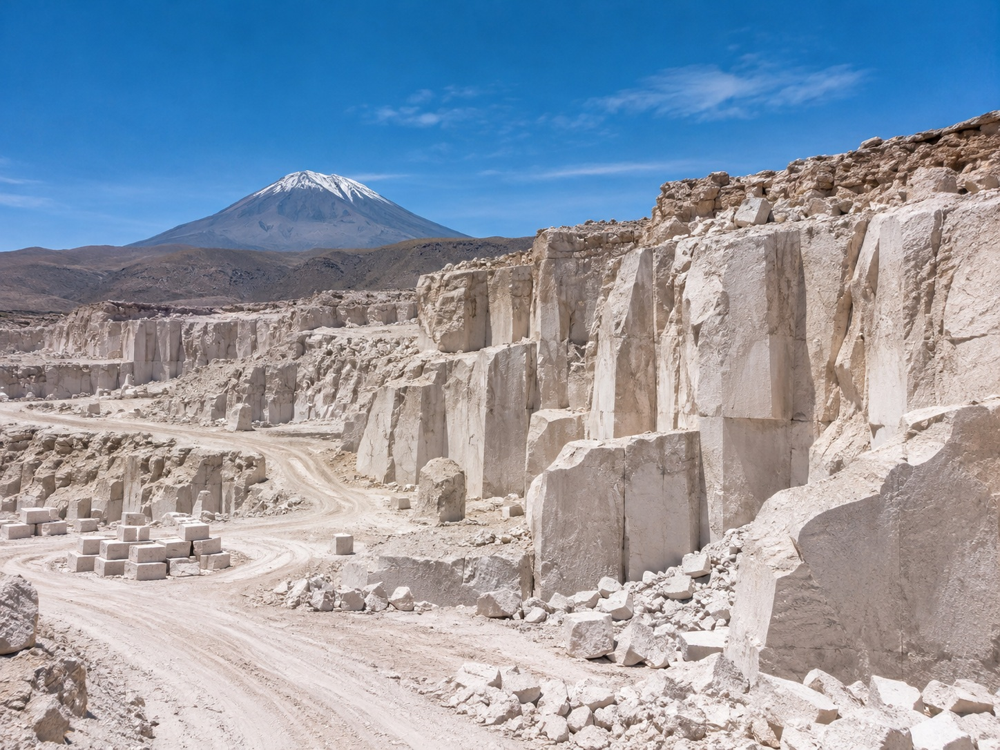
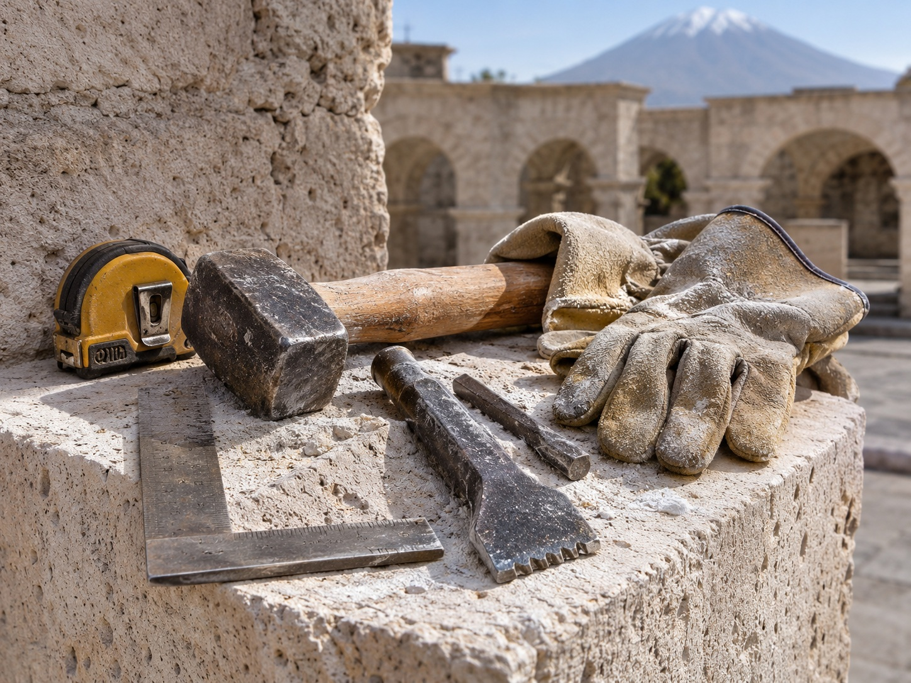
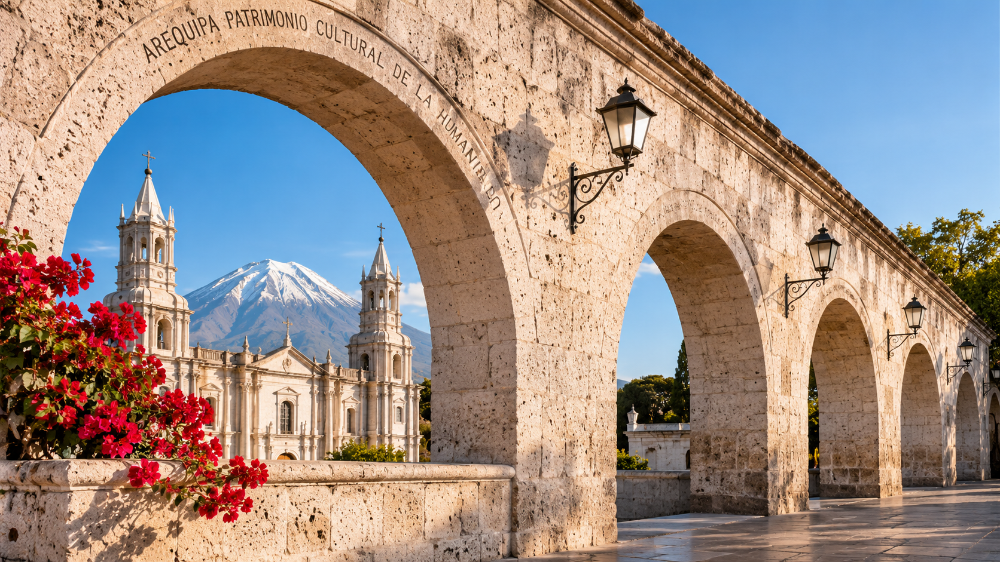
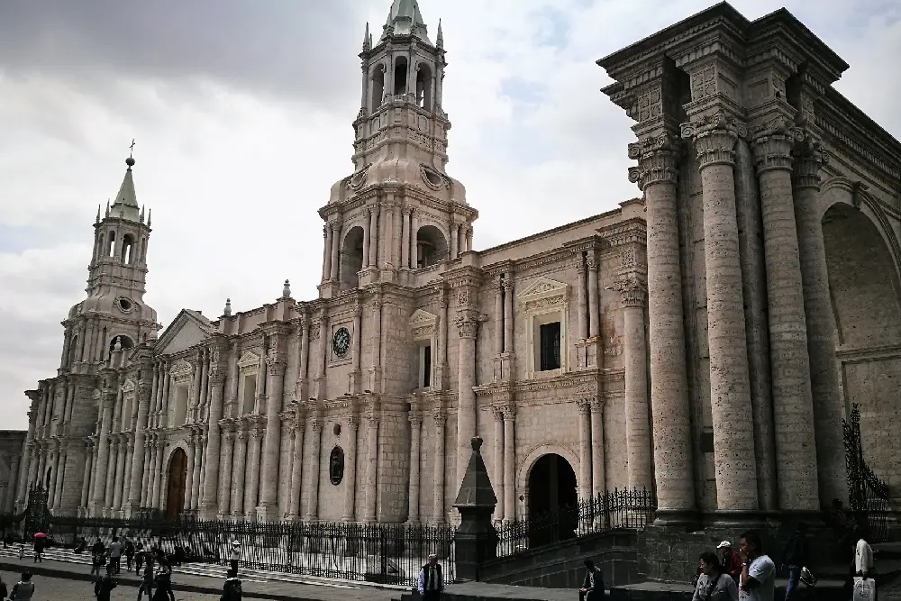

Extracción
Obtención de la piedra en las canteras.
Cada piedra guarda una historia. Descubre las manos, las tradiciones y los recuerdos que forman parte de la identidad de la Ciudad Blanca.
Descubre nuestra historia Vive la experiencia
El sillar es una roca de origen volcánico que forma parte de la historia y la arquitectura de Arequipa.
Su presencia en casonas, iglesias y monumentos permite reconocer una tradición que ha acompañado el desarrollo de nuestra ciudad durante generaciones.
Sin embargo, detrás de cada construcción existe el esfuerzo de personas que han aprendido a transformar la piedra mediante su trabajo y experiencia.
La memoria de una ciudad no solamente vive en sus calles, sino también en las manos de quienes las construyeron.
Ecos del Sillar
El trabajo de los canteros requiere paciencia, precisión, conocimiento y experiencia.
Cada bloque de sillar representa un proceso de transformación en el que las herramientas y las habilidades del trabajador cumplen un papel fundamental.
Reconocer este oficio también significa valorar a las personas que mantienen viva una parte importante de nuestra memoria cultural.

Obtención de la piedra en las canteras.
Transformación de la piedra mediante herramientas y técnicas artesanales.
Conservación de conocimientos y tradiciones entre generaciones.
Una mirada a los espacios, materiales y tradiciones que forman parte de nuestra identidad.




Descubre nuestra narrativa audiovisual sobre el sillar de Arequipa.
Escucha una experiencia sonora inspirada en nuestra memoria cultural.
Explora nuestra narrativa interactiva y descubre una historia a través de tus propias decisiones.
Comenzar historia interactivaConocer el sillar significa acercarnos a nuestra historia, valorar el esfuerzo de los canteros y comprender la importancia de conservar las tradiciones que nos identifican.
Cada generación tiene la oportunidad de reconocer, proteger y compartir este legado.
Volver a explorarEcos del Sillar es un proyecto académico desarrollado para el curso de Taller de Narrativa Digital de la Escuela Profesional de Ingeniería de Sistemas de la UNSA.
Consulta las fuentes, los créditos y las condiciones de uso de los recursos empleados en este proyecto.
Consultar créditos y referenciasEl proyecto no solicita datos personales. La publicación de testimonios e imágenes de terceros está sujeta a la verificación de los permisos correspondientes.
Se utilizó inteligencia artificial como herramienta de apoyo para la elaboración de la estructura web y los borradores de contenido, ademas de mejorar la resolucion de las imagenes.
El proyecto busca ofrecer una experiencia accesible mediante navegación por teclado, textos alternativos y un diseño adaptable a diferentes dispositivos.